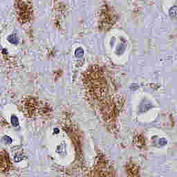

Phase 1 · degradation family 07 / 10
JPEG compression
Strong severity01 Clean reference
02 Degraded

03 Restored

DegradeLossy block transform coding discards coefficients and introduces block/ringing artifacts; 16-bit inputs also incur an 8-bit round trip.
RestoreWavelet denoising compares post-compression smoothing, but discarded coefficients remain unrecoverable.
Illustrative evaluation record · tang · et · al · 2019 · recipe c0c1988b